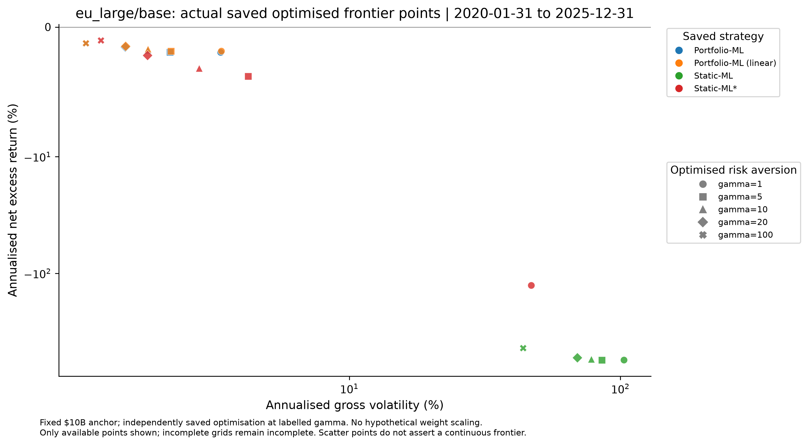
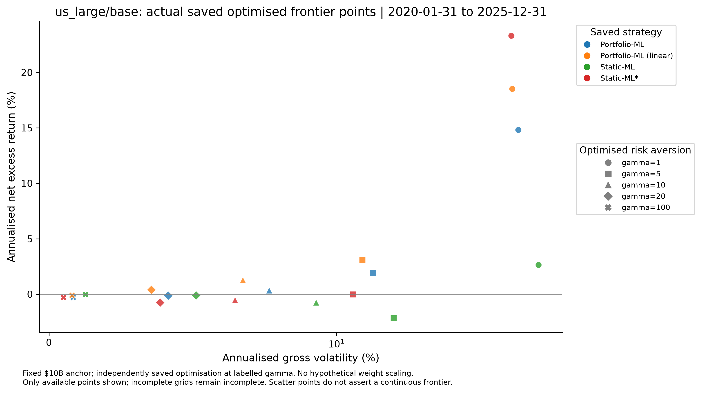
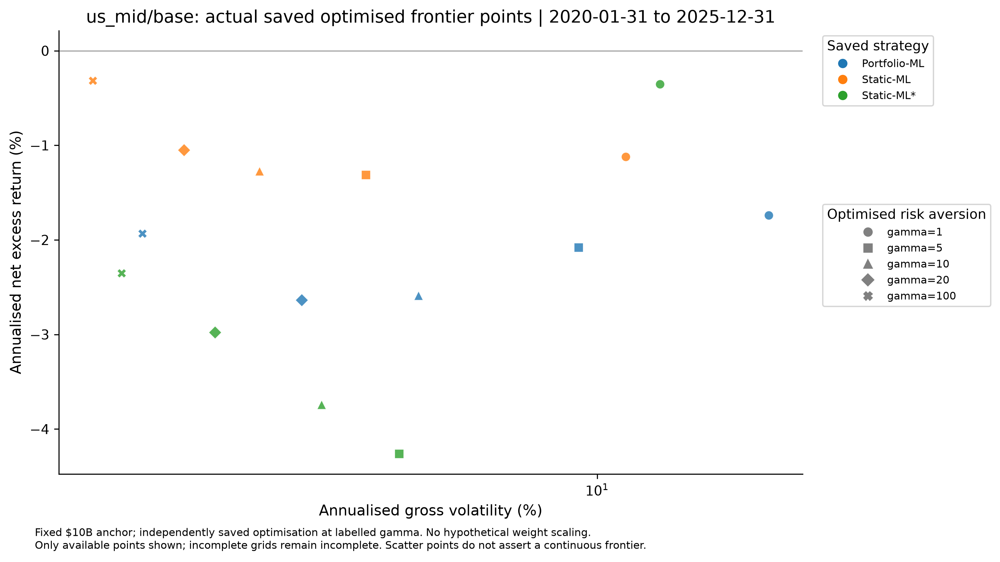

Run: 2026-11-01T01:17:01.103262+08:00 (Asia/Singapore). Saved outputs only; no model fitting, portfolio optimisation or downloaded inputs.
All main comparisons use identical saved 2020–2025 return months within each dataset. Cross-dataset tables use the common calendar without pooling stock or return observations. The European universe is Europe-wide, not UK-only. Base portfolios target roughly 80 stocks; the saved US-large 250-stock experiment is also evaluated.
Initial return-model history begins in 2005. Portfolio validation forecasts cover 2015–2019; 2020–2025 is the declared walk-forward test. Models and portfolio hyperparameters were updated annually using past observations. There is no separate unseen holdout, and post-test research selection limits claims of pristine OOS validation.
Paper conventions: arithmetic annualisation (monthly mean ×12, gross SD ×√12), net Sharpe with gross SD, gamma=10 sample-variance mean–variance utility, two-sided monthly turnover. Costs are modelled quadratic price impact. Drawdown/CAGR/Sortino/Calmar are evaluation extensions with explicit excess-return definitions.
Best saved ML utility: Portfolio-ML (linear), -2.24%/year, net excess return -1.69%, gross volatility 3.31%, paper net Sharpe -0.511, annual TC 0.25%, mean monthly turnover 1.73%. The highest ML Sharpe is Portfolio-ML (linear) (-0.511).
Across ML and benchmarks, highest utility is Portfolio-ML (linear) (-2.24%/year). Sample: 72 months, 2020-01-31 to 2025-12-31.
- Versus Portfolio-ML: utility difference 0.08%/year; paired block-bootstrap 95% CI [-0.03%, 0.19%]; HAC Holm-adjusted p=1; paper posterior-style probability=0.853.
- Versus Static-ML*: utility difference 2.19%/year; paired block-bootstrap 95% CI [0.28%, 4.39%]; HAC Holm-adjusted p=0.9848; paper posterior-style probability=0.967.
- Versus Static-ML: utility difference 847.32%/year; paired block-bootstrap 95% CI [343.86%, 1,402.86%]; HAC Holm-adjusted p=0.01175; paper posterior-style probability=1.000.
- Versus Markowitz-ML: utility difference 747,746,366.83%/year; paired block-bootstrap 95% CI [302,362,967.43%, 1,254,388,218.45%]; HAC Holm-adjusted p=0.01175; paper posterior-style probability=1.000.
- Versus Factor-ML: utility difference 103,615.57%/year; paired block-bootstrap 95% CI [60,555.13%, 153,828.57%]; HAC Holm-adjusted p=0.0002849; paper posterior-style probability=1.000.
- Versus Market: utility difference 12.19%/year; paired block-bootstrap 95% CI [0.26%, 23.72%]; HAC Holm-adjusted p=0.9856; paper posterior-style probability=0.957.
Best saved ML utility: Portfolio-ML (active; TE 1%), -0.59%/year, net excess return 14.82%, gross volatility 17.55%, paper net Sharpe 0.844, annual TC 0.09%, mean monthly turnover 4.95%. The highest ML Sharpe is Portfolio-ML (active; TE 1%) (0.844).
Across ML and benchmarks, highest utility is Market (-0.18%/year). Sample: 72 months, 2020-01-31 to 2025-12-31.
- Versus Portfolio-ML: utility difference 2.00%/year; paired block-bootstrap 95% CI [-10.45%, 14.34%]; HAC Holm-adjusted p=1; paper posterior-style probability=0.633.
- Versus Static-ML*: utility difference 2.04%/year; paired block-bootstrap 95% CI [-13.72%, 15.40%]; HAC Holm-adjusted p=1; paper posterior-style probability=0.632.
- Versus Static-ML: utility difference 4.47%/year; paired block-bootstrap 95% CI [-10.67%, 17.04%]; HAC Holm-adjusted p=1; paper posterior-style probability=0.762.
- Versus Markowitz-ML: utility difference 1,026.02%/year; paired block-bootstrap 95% CI [629.11%, 1,492.98%]; HAC Holm-adjusted p=5.688e-06; paper posterior-style probability=1.000.
- Versus Factor-ML: utility difference 147.09%/year; paired block-bootstrap 95% CI [109.95%, 181.86%]; HAC Holm-adjusted p=2.244e-15; paper posterior-style probability=1.000.
- Versus Market: utility difference -0.41%/year; paired block-bootstrap 95% CI [-1.39%, 0.77%]; HAC Holm-adjusted p=1; paper posterior-style probability=0.180.
Best saved ML utility: Static-ML*, -1.66%/year, net excess return 0.58%, gross volatility 6.69%, paper net Sharpe 0.087, annual TC 0.29%, mean monthly turnover 11.24%. The highest ML Sharpe is Static-ML* (0.087).
Across ML and benchmarks, highest utility is Market (-1.17%/year). Sample: 72 months, 2020-01-31 to 2025-12-31.
- Versus Portfolio-ML: utility difference 1.44%/year; paired block-bootstrap 95% CI [-4.15%, 6.67%]; HAC Holm-adjusted p=1; paper posterior-style probability=0.689.
- Versus Static-ML: utility difference 6.25%/year; paired block-bootstrap 95% CI [1.66%, 10.67%]; HAC Holm-adjusted p=0.05846; paper posterior-style probability=0.990.
- Versus Markowitz-ML: utility difference 5,583.74%/year; paired block-bootstrap 95% CI [3,668.94%, 7,477.66%]; HAC Holm-adjusted p=2.823e-10; paper posterior-style probability=1.000.
- Versus Factor-ML: utility difference 100.04%/year; paired block-bootstrap 95% CI [76.03%, 122.86%]; HAC Holm-adjusted p=3.782e-16; paper posterior-style probability=1.000.
- Versus Market: utility difference -0.49%/year; paired block-bootstrap 95% CI [-12.78%, 13.22%]; HAC Holm-adjusted p=1; paper posterior-style probability=0.457.
Best saved ML utility: Static-ML, -1.99%/year, net excess return -1.27%, gross volatility 3.79%, paper net Sharpe -0.335, annual TC 1.41%, mean monthly turnover 2.19%. The highest ML Sharpe is Static-ML (-0.335).
Across ML and benchmarks, highest utility is Static-ML (-1.99%/year). Sample: 72 months, 2020-01-31 to 2025-12-31.
- Versus Portfolio-ML: utility difference 2.85%/year; paired block-bootstrap 95% CI [-0.99%, 8.97%]; HAC Holm-adjusted p=0.9473; paper posterior-style probability=0.876.
- Versus Static-ML*: utility difference 2.97%/year; paired block-bootstrap 95% CI [-0.39%, 8.56%]; HAC Holm-adjusted p=0.9286; paper posterior-style probability=0.949.
- Versus Markowitz-ML: utility difference 3,579.40%/year; paired block-bootstrap 95% CI [2,425.05%, 4,751.52%]; HAC Holm-adjusted p=4.793e-11; paper posterior-style probability=1.000.
- Versus Factor-ML: utility difference 1,623.62%/year; paired block-bootstrap 95% CI [1,412.53%, 1,800.37%]; HAC Holm-adjusted p=2.691e-58; paper posterior-style probability=1.000.
- Versus Market: utility difference 23.25%/year; paired block-bootstrap 95% CI [6.68%, 39.59%]; HAC Holm-adjusted p=0.1066; paper posterior-style probability=0.989.
eu_large/base: Portfolio-ML (linear), utility -2.24%/year and paper net Sharpe -0.511; us_large/base: Portfolio-ML (active; TE 1%), utility -0.59%/year and paper net Sharpe 0.844; us_large/u250: Static-ML*, utility -1.66%/year and paper net Sharpe 0.087; us_mid/base: Static-ML, utility -1.99%/year and paper net Sharpe -0.335.
These are conditional rankings of saved portfolios. All 4 dataset-specific winning ML utilities are negative at gamma=10. The zero-excess-risk cash alternative would have zero utility algebraically, but is not inserted as an implemented strategy. Compare passive benchmarks above, rather than equating best ML with best investment.
There are 4 distinct ML winners across 4 dataset samples. Baseline Portfolio-ML utility is eu_large/base -2.32%/year, us_large/base -2.59%/year, us_large/u250 -3.10%/year, us_mid/base -4.84%/year. Common dates do not equal common inputs: membership, liquidity, fitted forecasts, country exposure and regional training populations differ. No pooled return or causal regional/model-effect estimate is formed (tables/cross_dataset_common_calendar.csv).
Across 166 unordered within-dataset pairs, 88 utility and 89 paper-net-Sharpe differences have Holm-adjusted HAC p<0.05. Families are separate by dataset and metric. Much of this separation involves extreme saved costs, so it is not evidence that all close ML competitors differ reliably.
- eu_large/base, best versus next-best ML (Portfolio-ML (linear) versus Portfolio-ML): 0.08 percentage points/year (95% block CI -0.03 percentage points to 0.19 percentage points; Holm HAC p=1).
- us_large/base, best versus next-best ML (Portfolio-ML (active; TE 1%) versus Portfolio-ML (linear)): 0.42 percentage points/year (95% block CI -13.71 percentage points to 13.72 percentage points; Holm HAC p=1).
- us_large/u250, best versus next-best ML (Static-ML* versus Portfolio-ML): 1.44 percentage points/year (95% block CI -4.15 percentage points to 6.67 percentage points; Holm HAC p=1).
- us_mid/base, best versus next-best ML (Static-ML versus Portfolio-ML): 2.85 percentage points/year (95% block CI -0.99 percentage points to 8.97 percentage points; Holm HAC p=0.9473).
The paper posterior-style probabilities above are not these frequentist p-values. CIs condition on already selected portfolios, not a new untouched holdout. Block lengths 3/6/12 and joint-bootstrap ranking stability are saved; posterior-like certainty can coexist with weak HAC support in this short dependent sample.
Among all models and benchmarks, conditional joint-bootstrap frequencies of rank one are eu_large/base Portfolio-ML (linear): 91.5% (95% rank interval 1–2); us_large/base Market: 41.8% (95% rank interval 1–6); us_large/u250 Market: 51.9% (95% rank interval 1–5); us_mid/base Static-ML: 82.8% (95% rank interval 1–3). These are resampling stability frequencies, not Bayesian or future-win probabilities.
- eu_large/base: baseline Portfolio-ML has higher utility than 4/4 saved standard return-prediction portfolio variants. Versus tuned Static-ML*: 2.12 percentage points/year (95% block CI 0.14 percentage points to 4.32 percentage points; Holm HAC p=0.9856).
- us_large/base: baseline Portfolio-ML has higher utility than 4/4 saved standard return-prediction portfolio variants. Versus tuned Static-ML*: 0.04 percentage points/year (95% block CI -6.59 percentage points to 7.00 percentage points; Holm HAC p=1).
- us_large/u250: baseline Portfolio-ML has higher utility than 3/4 saved standard return-prediction portfolio variants. Versus tuned Static-ML*: -1.44 percentage points/year (95% block CI -6.67 percentage points to 4.15 percentage points; Holm HAC p=1).
- us_mid/base: baseline Portfolio-ML has higher utility than 3/4 saved standard return-prediction portfolio variants. Versus tuned Static-ML*: 0.11 percentage points/year (95% block CI -1.60 percentage points to 1.81 percentage points; Holm HAC p=0.9473).
Portfolio-ML therefore has no universal dominance over tuned Static-ML*. Linear and active Portfolio-ML are separate saved variants; the active mandate is benchmark-relative rather than the same absolute utility objective.
- eu_large/base, Portfolio-ML versus Static-ML*: annual net-return difference 1.41 percentage points = gross-return difference 1.23 percentage points + cost saving 0.18 percentage points; mean monthly turnover 1.73% versus 3.12%.
- us_large/base, Portfolio-ML versus Static-ML*: annual net-return difference 0.88 percentage points = gross-return difference 0.96 percentage points + cost saving -0.09 percentage points; mean monthly turnover 11.30% versus 10.66%.
- us_large/u250, Portfolio-ML versus Static-ML*: annual net-return difference -1.26 percentage points = gross-return difference -1.14 percentage points + cost saving -0.12 percentage points; mean monthly turnover 11.41% versus 11.24%.
- us_mid/base, Portfolio-ML versus Static-ML*: annual net-return difference 1.15 percentage points = gross-return difference 1.37 percentage points + cost saving -0.22 percentage points; mean monthly turnover 2.52% versus 2.49%.
This exact accounting decomposition is not causal attribution. The utility difference also includes the gross-variance penalty. Squared trade size, venue liquidity and wealth, not turnover alone, determine the modelled impact (tables/return_cost_decomposition.csv).
- Cost re-pricing, eu_large/base: 0x: Portfolio-ML (linear) -2.00%/year; 1x: Portfolio-ML (linear) -2.24%/year; 3x: Portfolio-ML (linear) -2.74%/year. These portfolios were not re-optimised.
- Cost re-pricing, us_large/base: 0x: Portfolio-ML (active; TE 1%) -0.50%/year; 1x: Portfolio-ML (active; TE 1%) -0.59%/year; 3x: Portfolio-ML (active; TE 1%) -0.76%/year. These portfolios were not re-optimised.
- Cost re-pricing, us_large/u250: 0x: Static-ML* -1.37%/year; 1x: Static-ML* -1.66%/year; 3x: Static-ML* -2.24%/year. These portfolios were not re-optimised.
- Cost re-pricing, us_mid/base: 0x: Static-ML -0.58%/year; 1x: Static-ML -1.99%/year; 3x: Static-ML -4.82%/year. These portfolios were not re-optimised.
- Fixed saved weights, eu_large/base: gamma=1: Portfolio-ML (linear) (-1.75%/year); gamma=100: Portfolio-ML (linear) (-7.18%/year). Changing evaluation gamma does not retune weights.
- Fixed saved weights, us_large/base: gamma=1: Portfolio-ML (active; TE 1%) (13.28%/year); gamma=100: Static-ML* (-21.45%/year). Changing evaluation gamma does not retune weights.
- Fixed saved weights, us_large/u250: gamma=1: Static-ML* (0.36%/year); gamma=100: Static-ML* (-21.77%/year). Changing evaluation gamma does not retune weights.
- Fixed saved weights, us_mid/base: gamma=1: Static-ML (-1.34%/year); gamma=100: Static-ML (-8.46%/year). Changing evaluation gamma does not retune weights.
- There are 267 complete saved optimised grid/capacity strategy points. The actual fixed-$10B frontier charts use saved gamma points only, without scaling or interpolation. AUM paths at a common gamma are separated from fixed-weight scenarios.
- Fixed-weight Portfolio-ML, eu_large/base: utility -2.10% at $1B and -8.22% at $250B (gamma=10). Actual saved re-optimised points span -1.10% at $1B to -5.21% at $250B; return/weight changes make this a different experiment.
- Fixed-weight Portfolio-ML, us_large/base: utility -2.23% at $1B and -12.28% at $250B (gamma=10). Actual saved re-optimised points span -3.48% at $1B to -1.33% at $250B; return/weight changes make this a different experiment.
- Fixed-weight Portfolio-ML, us_large/u250: utility -2.73% at $1B and -12.93% at $250B (gamma=10).
- Fixed-weight Portfolio-ML, us_mid/base: utility -3.42% at $1B and -42.79% at $250B (gamma=10). Actual saved re-optimised points span -1.69% at $1B to -16.77% at $100B; return/weight changes make this a different experiment.
- European Markowitz-ML: the formation-month low-liquidity third contributes 89.9% of annual modelled TC. This groups actual raw USD volume, not rank-normalised liquidity features.
- All 288/288 examined covariance matrices are positive definite; maximum condition number is 1,648.1. This numerical check does not validate liquidity inputs, eliminate forecast error, or constitute an alternative covariance estimator.
- Baseline Portfolio-ML realised-to-RMS-forecast gross-volatility ratios: eu_large/base 1.70, us_large/base 0.96, us_large/u250 0.89, us_mid/base 1.37. Descriptive forecast calibration uses changing saved positions; no confidence claim or refit is implied.
- eu_large/base: mean held-universe one-month rank IC -0.0205; unadjusted exploratory HAC 95% CI [-0.0446, 0.0036], 72 months. Imputed-zero targets are excluded from this diagnostic only; headline portfolios retain their saved assumptions.
- us_large/base: mean held-universe one-month rank IC -0.0022; unadjusted exploratory HAC 95% CI [-0.0406, 0.0363], 72 months. Imputed-zero targets are excluded from this diagnostic only; headline portfolios retain their saved assumptions.
- us_large/u250: mean held-universe one-month rank IC -0.0006; unadjusted exploratory HAC 95% CI [-0.0291, 0.0279], 72 months. Imputed-zero targets are excluded from this diagnostic only; headline portfolios retain their saved assumptions.
- us_mid/base: mean held-universe one-month rank IC 0.0039; unadjusted exploratory HAC 95% CI [-0.0265, 0.0343], 72 months. Imputed-zero targets are excluded from this diagnostic only; headline portfolios retain their saved assumptions.
- us_mid/u250: mean held-universe one-month rank IC 0.0015; unadjusted exploratory HAC 95% CI [-0.0206, 0.0236], 72 months. Imputed-zero targets are excluded from this diagnostic only; headline portfolios retain their saved assumptions. Input-only diagnostic; no saved primary portfolio performance is available for this dataset.
- Saved economic permutation importance, us_large/base Markowitz-ML: largest positive loss is quality, 0.60 percentage points annual gross utility; Markowitz construction gamma=100 and zero TC, seed standard error 0.11 percentage points across 20 permutations. Evaluation utility gamma=10. This seed SE measures permutation variability conditional on one model, not independent training uncertainty; the gross Markowitz diagnostic differs from its headline portfolio.
- Saved economic permutation importance, us_large/base Portfolio-ML: largest positive loss is profit_growth, 0.56 percentage points annual net utility after saved modelled TC, seed standard error 0.03 percentage points across 20 permutations. Evaluation utility gamma=10. This seed SE measures permutation variability conditional on one model, not independent training uncertainty; the gross Markowitz diagnostic differs from its headline portfolio.
- Saved economic permutation importance, us_large/base Portfolio-ML (linear): largest positive loss is low_leverage, 0.39 percentage points annual net utility after saved modelled TC, seed standard error 0.04 percentage points across 20 permutations. Evaluation utility gamma=10. This seed SE measures permutation variability conditional on one model, not independent training uncertainty; the gross Markowitz diagnostic differs from its headline portfolio.
Pure predictive permutation importance is unavailable. Theme–return rank associations are saved as descriptive diagnostics, not substituted for predictive importance. Observational exposures and permutations do not establish a causal characteristic explanation; 2–12 month decay is SKIPPED because multi-horizon predictions are not saved.
- eu_large/base, baseline Portfolio-ML annual utility: 2020–2022 -4.47% versus 2023–2025 -0.18%. These are 36-month descriptive splits, not independently selected holdouts.
- us_large/base, baseline Portfolio-ML annual utility: 2020–2022 -4.21% versus 2023–2025 -1.05%. These are 36-month descriptive splits, not independently selected holdouts.
- us_large/u250, baseline Portfolio-ML annual utility: 2020–2022 -2.65% versus 2023–2025 -3.59%. These are 36-month descriptive splits, not independently selected holdouts.
- us_mid/base, baseline Portfolio-ML annual utility: 2020–2022 -9.83% versus 2023–2025 0.12%. These are 36-month descriptive splits, not independently selected holdouts.
- eu_large/base: the full-period winning ML strategy, Portfolio-ML (linear), is also the annual utility winner in 4/6 individual years.
- us_large/base: the full-period winning ML strategy, Portfolio-ML (active; TE 1%), is also the annual utility winner in 4/6 individual years.
- us_large/u250: the full-period winning ML strategy, Static-ML*, is also the annual utility winner in 3/6 individual years.
- us_mid/base: the full-period winning ML strategy, Static-ML, is also the annual utility winner in 3/6 individual years.
The annual-winner changes and half-sample shifts do not support blanket time stability. VIX, market-sign, recession and calendar-stress rows and 24-month rolling charts are available. These ex-post partitions are exploratory; US recession/VIX data are context for Europe, not a European recession classification or proof of a trading signal.
The locally transcribed paper Table 2 reports Portfolio-ML utility 8.60%/year and net Sharpe 1.33 for 1981–2020. Here baseline Portfolio-ML utility ranges from -4.84% to -2.32%/year in 2020–2025. This does not reproduce the paper’s positive magnitude; dates, training history, universe size, membership, liquidity and characteristics differ, so it is not a like-for-like rejection.
Portfolio-ML has lower annual TC and higher utility than saved Markowitz-ML in 4/4 datasets. That supports the economic relevance of cost-aware construction in these saved outputs, while the absence of universal superiority to Static-ML* and passive benchmarks limits the broader conclusion. Extreme unconstrained costs amplify the apparent advantage.
The audit retains 373 flagged saved strategy-month rows: 373 have net TOTAL return at or below −100% after adding the saved risk-free rate; 20 have gross EXCESS return at or below −100% (overlap possible). These row counts are not interchangeable with the synthetic excess-index validity flag. The unconstrained model and quadratic impact paths are not executable after investor equity depletion.
Largest recorded stock-month cost contributor: eu_large/base, Markowitz-ML, ACCENTURE PLC (ID 314335702), formation 2023-09-30, modelled cost 4,197,552.04 times investor wealth, daily dollar volume $64,928, target/inherited weight -3.717/-19.131. Exact accounting reproduction does not externally validate this listing’s volume or economic feasibility.
There is no separate unseen holdout, no independent training-seed paths, no 2–12 month saved forecast panel, no alternative saved covariance estimator and no observed execution-cost validation. Missing results remain SKIPPED. Zero-return imputations and unavailable-history exclusions are enumerated in the audit; no additional catastrophic observations are silently removed. Statistical uncertainty cannot repair these design and data limits.
Some saved EXCESS returns net of modelled costs fall at or below -100% in a month. Their Table 2 arithmetic statistics are preserved and flagged; synthetic excess-index paths stop at that point, and full-sample geometric drawdown/CAGR/Calmar are unavailable. This excess-index criterion is distinct from funded equity depletion, which the audit checks using saved risk-free rates and net TOTAL returns. These cost/input issues need resolution at the model stage before interpreting an economic ranking as investable. This evaluation does not repair or refit models.
No cash portfolio has been added as an implemented strategy. At gamma=10, negative utility means that zero excess return with zero risk would have higher utility algebraically; it does not establish feasibility of another strategy under identical constraints.
- tables/table2_consolidated.csv: paper statistics plus extensions and validity flags.
- tables/table3_pairwise_tests.csv and dataset folders: paired inference and probability matrices. tables/bootstrap_ranking_stability.csv reports conditional resampling rank stability when inference is requested.
- tables/table4_correlations_long.csv and dataset folders: gross/net correlations.
- tables/annual_performance.csv, tables/rolling_and_cumulative.csv, tables/regime_performance.csv.
- robustness/: re-costing, AUM, gamma, saved grid, liquidity, construction, prediction and feature diagnostics.
- audit/: reconstruction checks, covariance/timing/data-quality findings, exclusions and source provenance.
- metric_dictionary.csv, EXCLUSIONS_ASSUMPTIONS_AND_CHANGES.md, validation/, run_settings.json.
- charts/: 300-dpi PNG and vector PDF. Axes use symmetric log scales when saved costs span many orders of magnitude.
Reference: Jensen, Kelly, Malamud and Pedersen (2026), Machine Learning and the Implementable Efficient Frontier. Exact implementation conventions were checked against the read-only authors’ R code in reference/jkmp_r/0 - General functions.R, 6 - Base analysis.R, and local Keats accounting/metrics functions.


